Kailash A. Hambarde
Researcher · Instituto de Telecomunicações
& Docente · UBI, Portugal
Pattern and Image Analysis · Information and Data Sciences
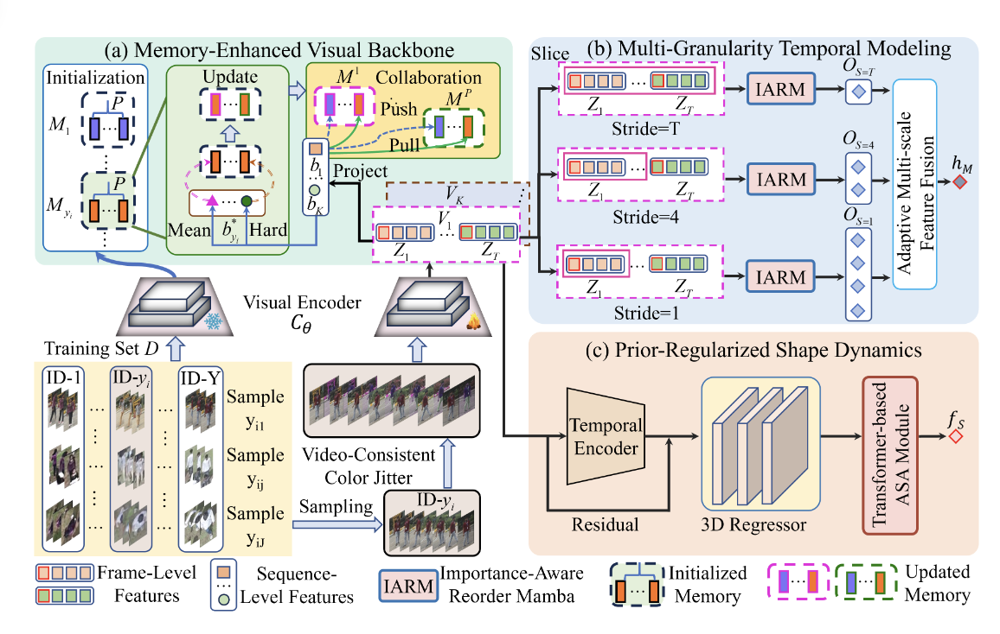
Challenge results for video-based person re-identification at extreme far distances, benchmarking state-of-the-art methods.
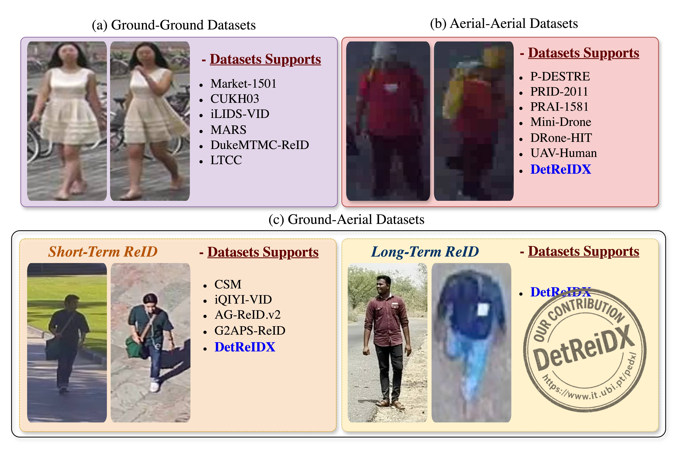
A stress-test dataset designed for UAV-based person recognition under real-world conditions, evaluating detection and re-identification at extreme distances.
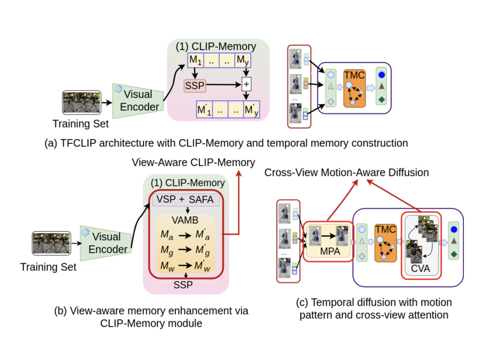
View-specific memory framework with temporal and scale awareness for video-based cross-view person re-identification.
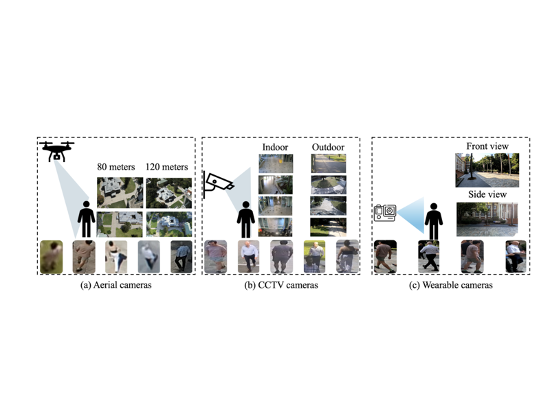
Results of the AG-VPReID 2025 challenge on aerial-ground video-based person re-identification.
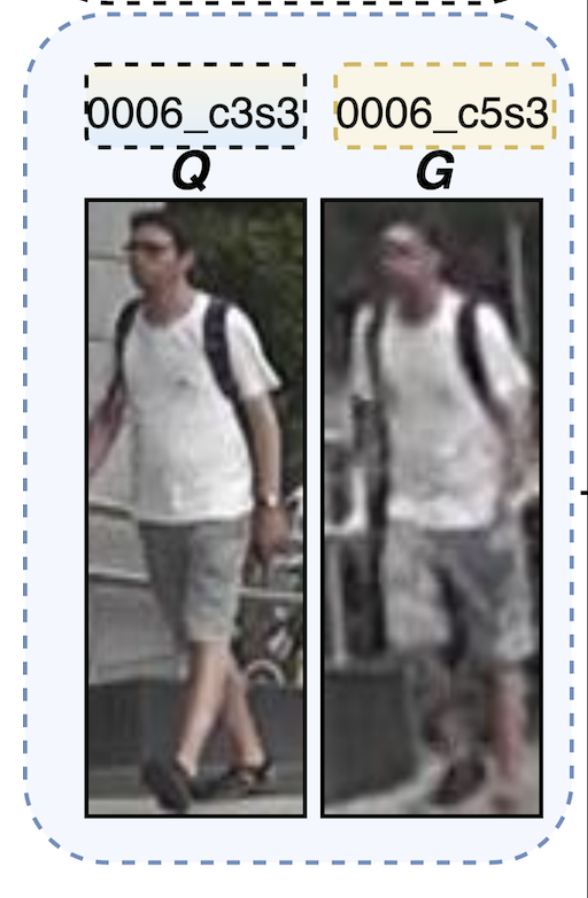
A comprehensive survey of causality-driven approaches in video-based person re-identification under unconstrained real-world conditions.
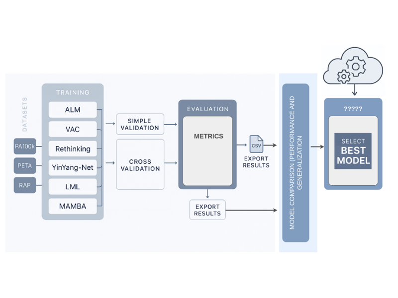
Analysis of domain generalization challenges in gender recognition across unseen environments.
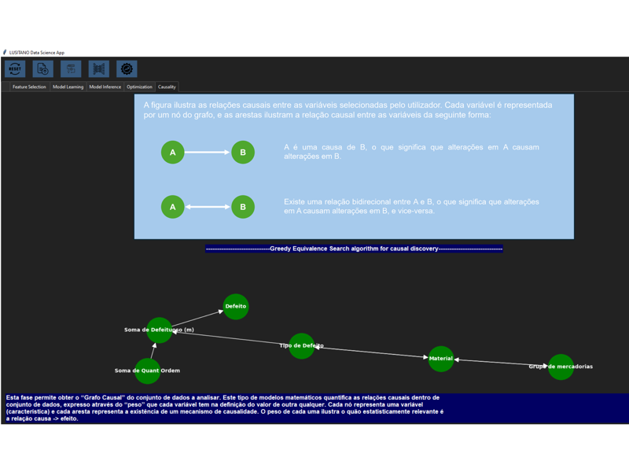
A causal-based framework for agnostic intelligent data analysis applied to manufacturing scenarios.
We compare the results due to ChatGPT-4o, Gemini-2.0-Flash, Claude 3.5 Sonnet, and Qwen-VL-Max to a baseline ReID PersonViT model, using the well-known Market1501 dataset.
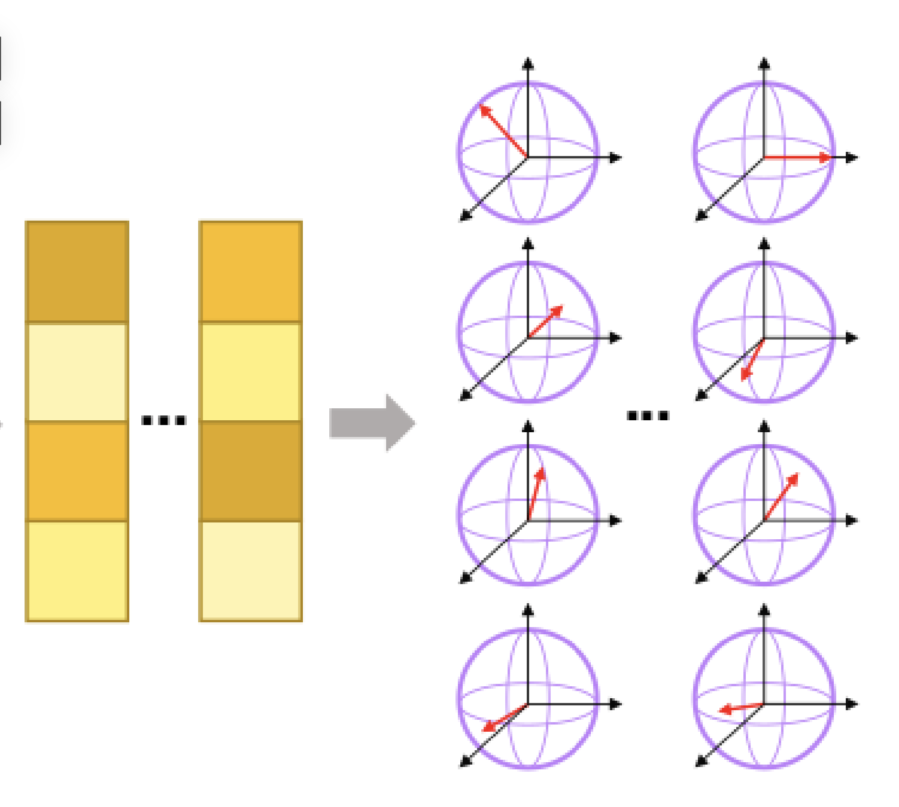
This study investigates the performance of the Laplacian-based Quantum Semi-Supervised Learning (QSSL) method across four benchmark datasets.
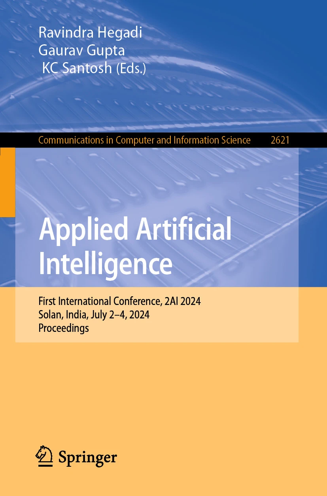
Hybrid deep learning approach for multimodal biometric fusion combining iris, face, and fingerprint modalities.
Comparative study of Vision Transformers versus CNNs for medical image analysis tasks.
Comparison of Faster R-CNN and YOLOv7 object detection frameworks for automated fabric defect detection.
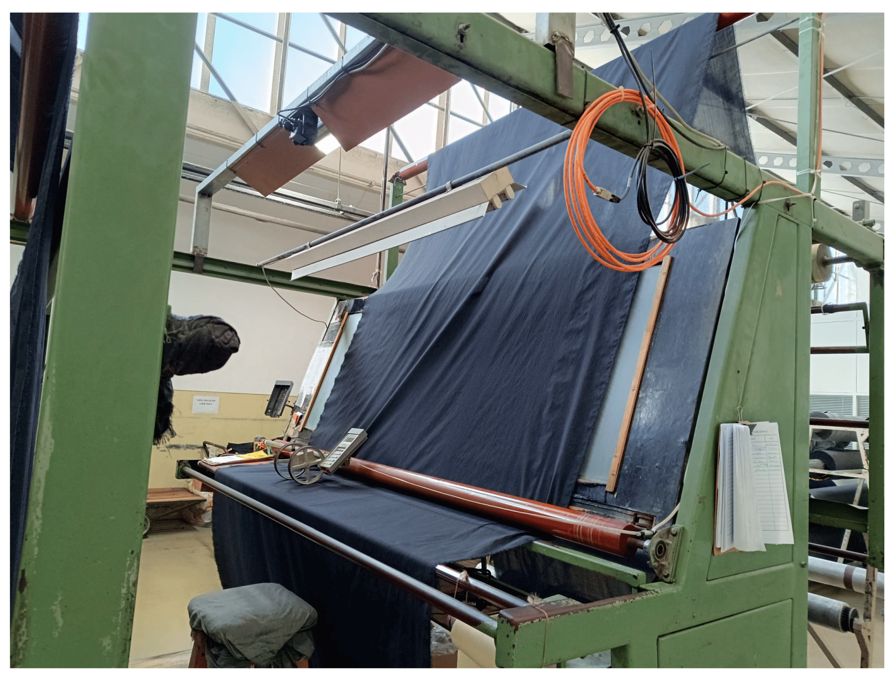
A survey of recent computer vision approaches for automated fabric defect detection.
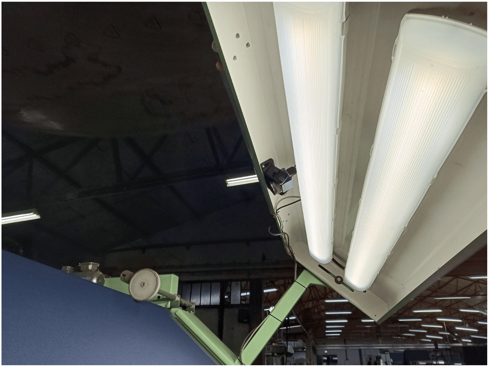
A novel dataset comprising a diverse selection of fabrics and defects from a textile company based in Portugal.
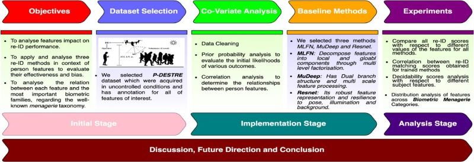
Analysis of subject features that provide the largest variations in re-identification performance.
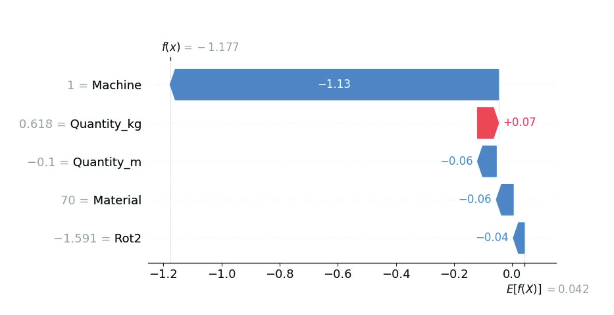
Demonstration of AI-based system for predicting manufacturing energy targets with R-squared of 0.78.
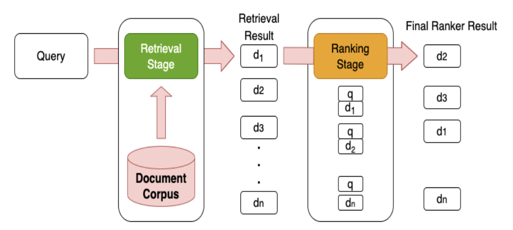
Historical development of IR models, key advancements, and challenges in the domain.
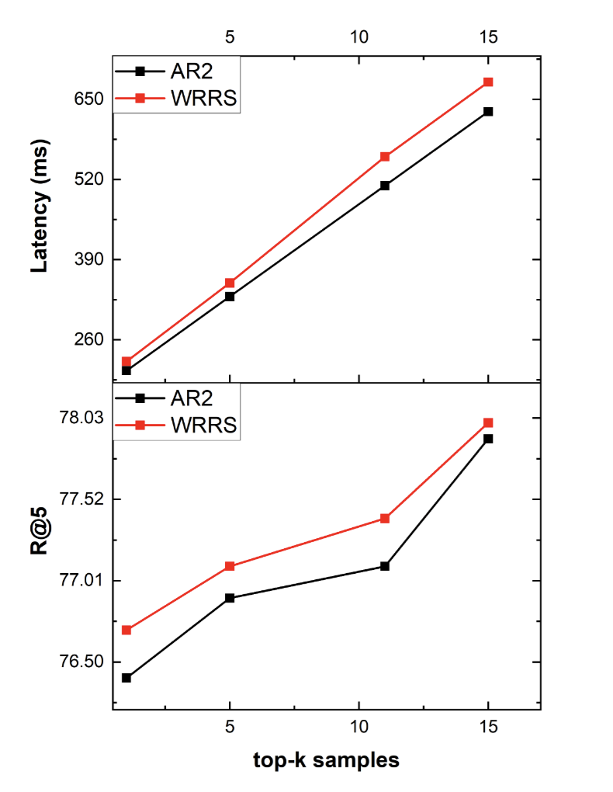
New approach for dense text retrieval addressing limitations of current negative sampling strategies.
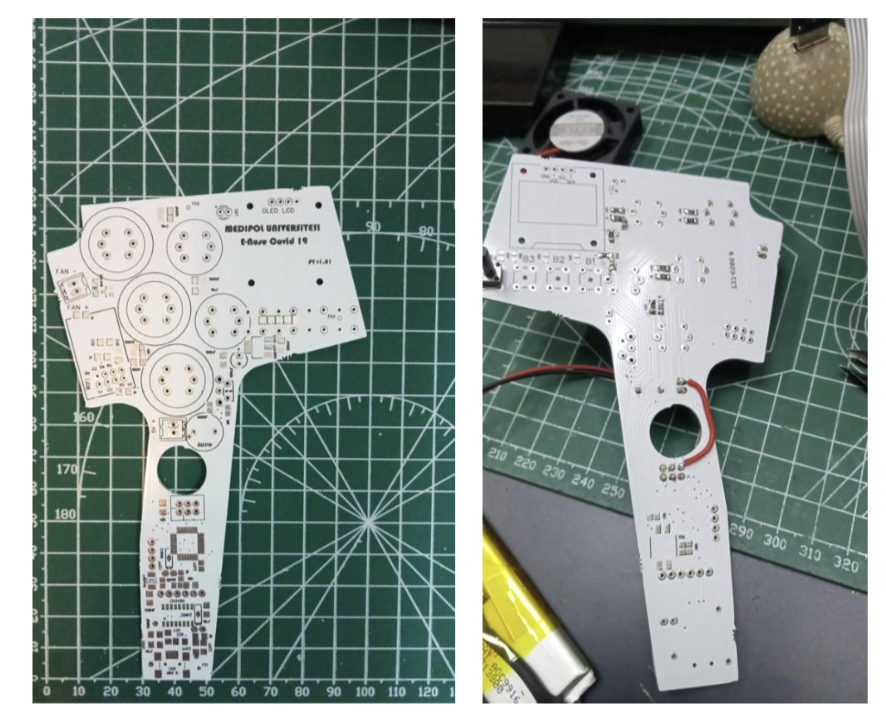
Point-of-care testing system detecting COVID-19 via volatile organic compounds in exhaled breath using Gradient Boosted Trees.
ANN model applied over customer datasets to forecast purchasing patterns.
Data analytics over Turkey-based e-commerce dataset evaluating supervised learning approaches.
Finding suitable areas for artificial water recharge using GIS, RS, AHP and GA technologies.
Comparative analysis of supervised ML algorithms for GIS-based crop selection.
AHP and GIS-based crop selection decision support system for Indian farmers.
Decision support system using GIS and DM techniques for precision farming in India.
Decision support system for local government providing suggestions for tree placement based on GIS spatial pattern analysis.